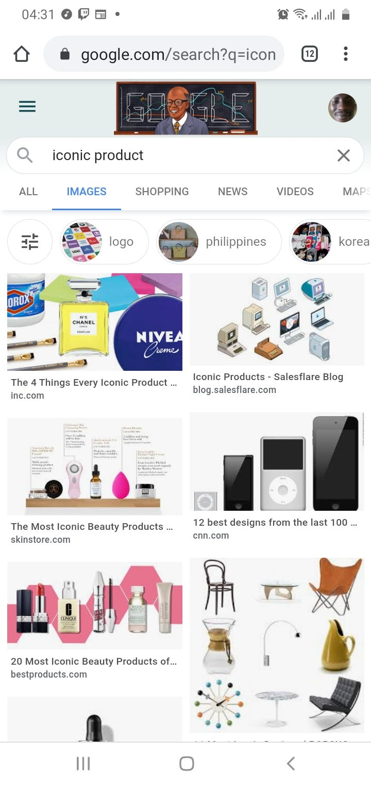

Dec 11, 2020
Iconic product
What if IP stand for iconic product?
An iconic product is a product that "growth hack" itself using values, memes, memories and cf connection not one which uses a collection of privates IP adresses for tricking a rating and review system. Not a clickbait driven product - in my coming rant I will go into what bookbait is about - now it is about products not books. An iconic product is what Seth Godin coins as a purple cow because it is remarkable and worth talking about and everything worth talking about will be shared and if it is shared it will spread like a wildfire because we human beings almost often like to be seen valuable when we talk. Telling worth things increases our status. If you want to succeed then build and market an iconic product or if you like a purple cow product.
